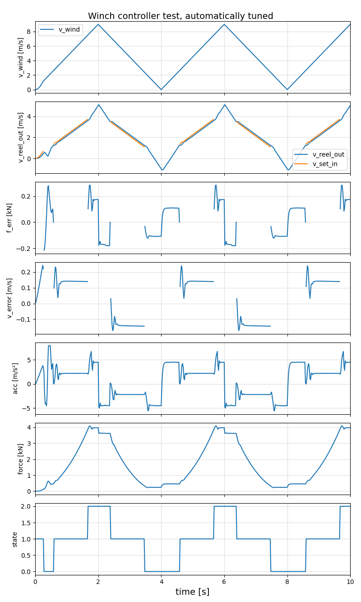

Autotuning
Introduction
The winch controller has 34 parameters (see Winchcontroller Settings). To determine and optimize all of them manually is time consuming and error prone, in particular if the physical system is changing. Therefore some form of automated tuning is desirable.
Methodology
When the Performance Indicators are defined, an optimizer can be used to determine the controller parameters. The controller is using three PID controllers and a mixer. The following parameters are tuned automatically:
wcs.i_speed # the speed controller gain
wcs.p_speed # the speed controller proportional gain
wcs.t_blend # the blending time for switching between controllers
wcs.pf_low # the lower force controller gain
wcs.if_low # the lower force controller proportional gain
wcs.pf_high # the upper force controller gain
wcs.if_high # the upper force controller integral gain
wcs.df_high # the differential gain of the upper force controllerThe global, blackbox optimizer package NOMAD.jl is used for the optimization process, together with a test case that mimics extreme wind conditions. With a very simple system model it allows to find an optimal solution within less than one minute.
The results can be influence with the new parameters:
damage_factor: 0.05 # damage at max acceleration for jerk_factor=0
jerk_factor: 0.90 # factor for the jerk (derivative of the acceleration), 0..1 Increase the damage factor $\Delta$ to make the controller less aggressive. Decrease the jerk_factor $\zeta$ to reduce the maximal accelerations. On the other hand, the controller will be stable for any combination of these two values in the range of 0..1. Increasing $\Delta$ will increase the force error and decrease the accelerations. A very small value of $\zeta$ will decrease the force error, but will result in oscillations on the acceleration signal which is not good for the lifetime of the winch.
Example
To run the auto-tuning script, launch Julia and execute:
include("scripts/autotune.jl")It will use the initial conditions provided in the file data/wc_settings.yaml and save the result in data/wc_settings_tuned.yaml.
All values are limited to $\hat x \le 2.5x~\land~\hat x \le x/2.5$, where $x$ is the original value and $\hat x$ the optimized value. Therefore make sure that none of the original values is zero.
Example output:
Blackbox evaluations: 897
Total model evaluations: 116337
Cache hits: 107
Total number of evaluations: 1004
Autotuning results: [14.999895, 0.125, 0.1090168, 2.24464e-5, 0.04164095, 3.83195e-5, 0.0271663, 4.0008673e-6]
Running simulation with tuned parameters...
Performance of force controllers: 92.86 %
Performance of speed controller: 93.82 %
Damage with jerk: 1.19 %
Combined performance γ: 92.06 %
[ Info: Tuned settings saved to data/wc_settings_tuned.yamlYou can plot the result with the command:
plot(lg)Example result

Untuned, original example: ForceSpeedController2
| Name | Before | After |
|---|---|---|
| Max force error | 388 N | 286 N |
| Lower force error | -336 N | -120 N |
| Max speed error | 0.5 m/s | 0.24 m/s |
| Performance of force controllers | 90.3 % | 92.9 % |
| Performance of speed controller | 84.4 % | 93.8 % |
| Combined performance | 78.5% | 92.1% |